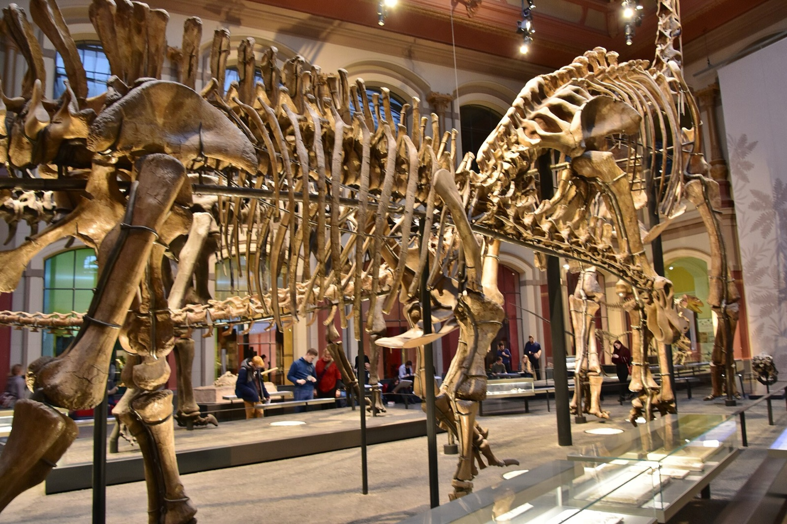
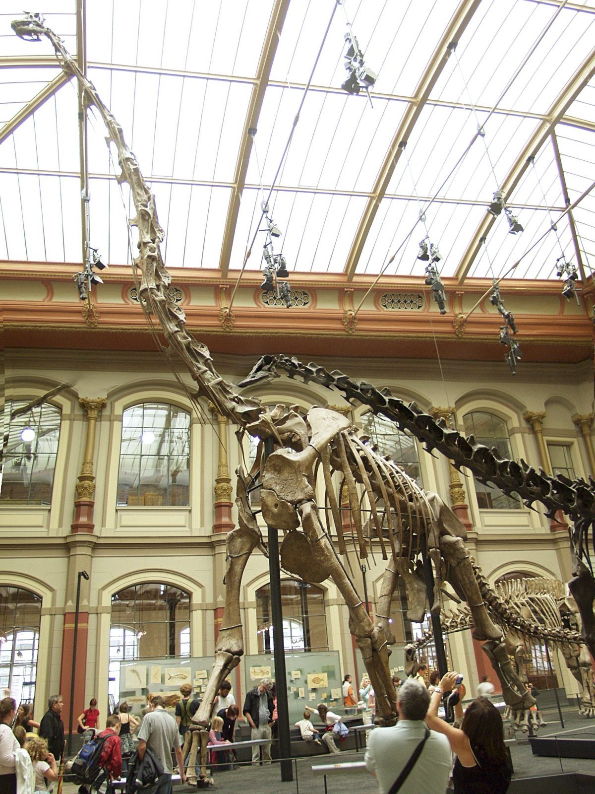
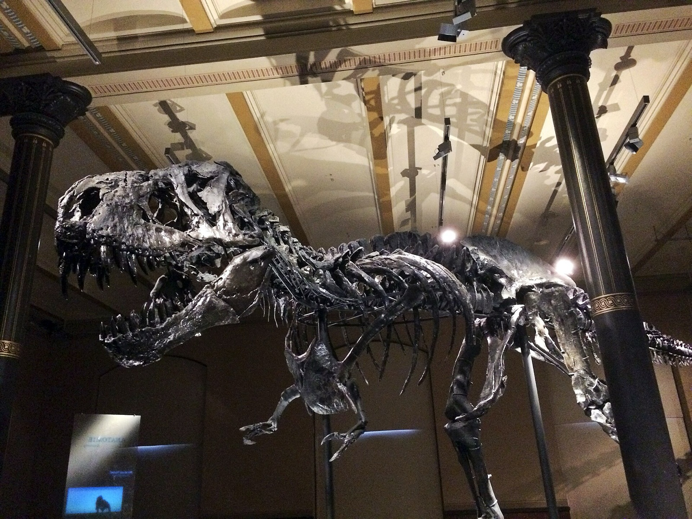
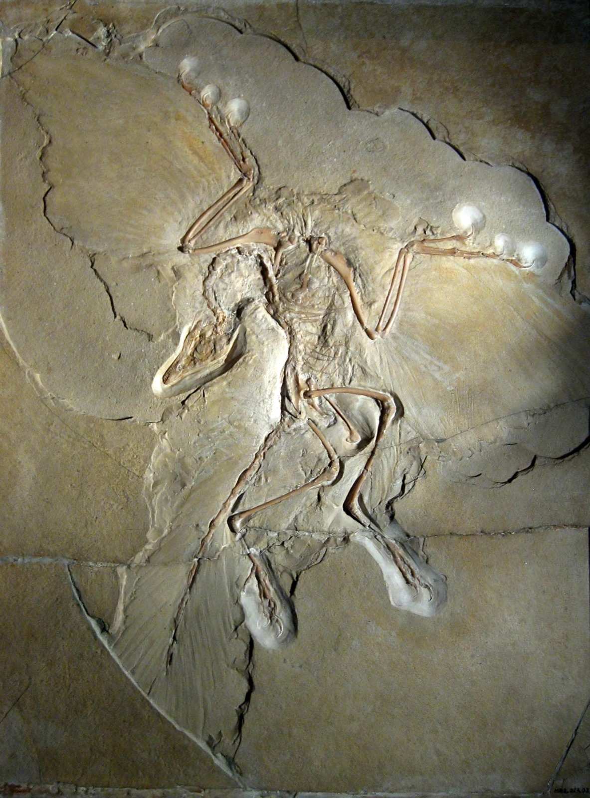
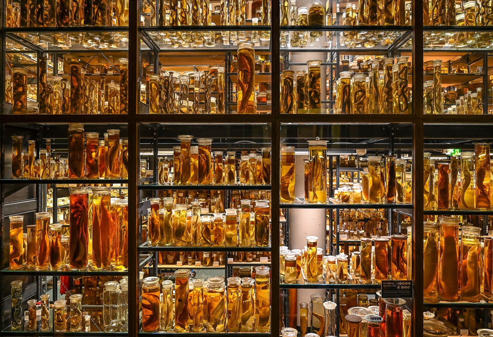
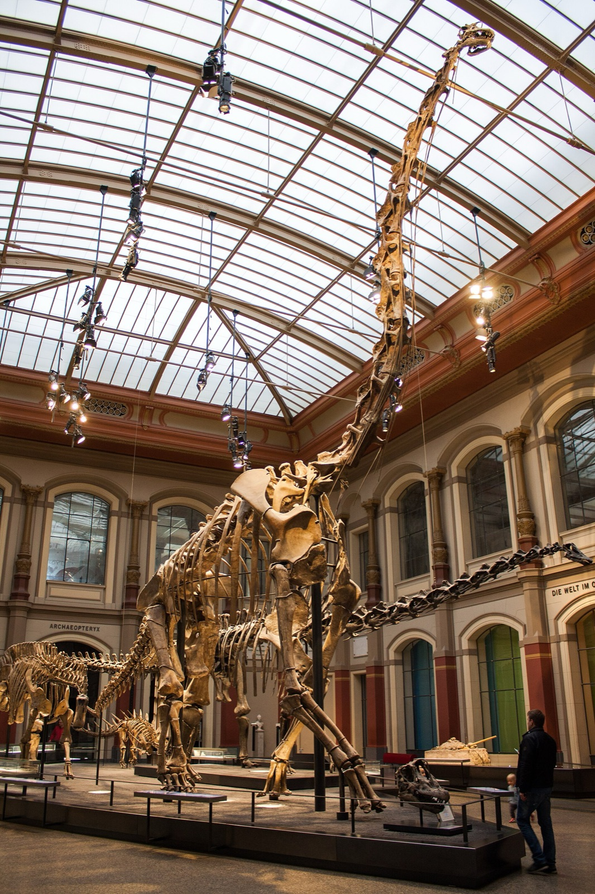

Contact sheet — Berlin Natural History Museum (6 images)

01 COVER — Giraffatitan hall (Richard Mortel, CC BY 2.0)

02 WIDGET — Giraffatitan portrait (R. Spekking, CC BY-SA 4.0)

03 — Tristan T. rex (C. A. Hansen, CC BY-SA 2.0)

04 — Archaeopteryx Berlin specimen (H. Raab, CC BY-SA 3.0)

05 — Wet collection (Tuxyso, CC BY-SA 4.0)

06 — Museum facade (Shadowgate, CC BY 2.0)